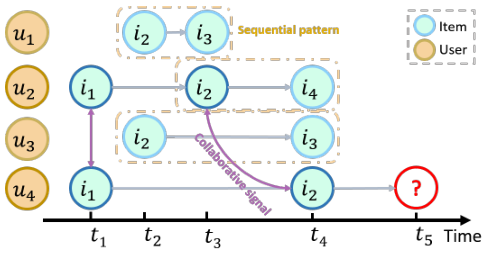
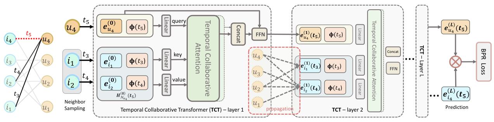

Continuous-Time Sequential Recommendation with Temporal Graph Collaborative Transformer (连续时间序列推荐与时间图协同 Transformer)
- 会议/期刊: CIKM 2021
- 作者与机构: Ziwei Fan, Zhiwei Liu, Philip S. Yu (UIUC)；Jiawei Zhang (UC Davis)；Yun Xiong (复旦大学)；Lei Zheng (Pinterest)
- 推荐链路定位: 召回 (Next-Item 序列召回)
- 研究方向: 序列与会话推荐 / 图神经网络与知识图谱推荐
- 论文原文: https://arxiv.org/abs/2108.06625v2
- 开源代码: https://github.com/DyGRec/TGSRec
TL;DR (1分钟核心速览)
现有序列推荐只建模「同一用户序列内的 item 转移」，忽略了跨用户、随时间演化的时序协同信号。TGSRec 把全部交互重构为带真实时间戳的连续时间二分图 (CTBG)，用可学习频率的三角时间核把标量时间映射为向量，并提出时间协同注意力 (TCT)：query 取自目标节点、key/value 取自采样邻居交互，使拼接后的点积自动分解为「用户-物品协同项 + 时间核项」。在 5 个数据集、按时间戳 80/10/10 切分、1000 负采样排序协议下，Recall@10 与 MRR 相对次优基线平均绝对提升 22.5% / 22.1%。
Background & Motivation (背景与核心矛盾)
- 主流范式: 以 SASRec / BERT4Rec 为代表的自注意力序列模型，在单条用户序列内按位置分配注意力权重，聚合历史 item 得到序列表征。
- 前人局限: ① 自注意力只能刻画 item-item 转移，缺乏跨序列的 user-item 协同建模（SSE-PT 仅把同一 user 向量硬加到序列上，无法表达交互关系）；② 时间被当作离散位置或固定间隔桶（TiSASRec），既无法表达真实时间差，也无法外推到训练中未出现的时间戳/时间跨度。
- 核心洞察 (Key Insight): 图 1 的玩具例子里，若只看序列转移，\(i_3\)因在\(u_1,u_3\)中出现 2 次会被推荐；但\(u_2\)与\(u_4\)都交互过\(i_1\)、\(i_2\)，协同相似度极高，因此\(u_2\)的序列模式应获更大权重，正确答案是\(i_4\)。协同信号与序列模式并存，且其贡献随时间间隔衰减。
- 本文切入点: 用「连续时间核 + 邻居交互作 key/value 的协同注意力」在图上同时编码两类信号。

Method (核心方法设计)
1. 整体框架 (Overall Architecture)
输入为连续时间二分图 \(\mathcal{B}=\{\mathcal{U},\mathcal{I},\mathcal{E}_T\}\)，边\(e=(u,i,t)\)携带实值时间戳。模型分三层：① 嵌入层同时维护长期节点嵌入\(\boldsymbol{E}=[\boldsymbol{E}_U;\boldsymbol{E}_I]\)与时间编码函数\(\Phi(t)\)；② 堆叠\(L\)层 TCT 层，每层先对节点\(u\)在时刻\(t\)之前随机采样\(S\)个历史交互\(\mathcal{N}_u(t)=\{(i,t_s)\mid t_s<t\}\)，再以目标节点信息为 query、邻居【item 嵌入\(\|\)时间向量】为 key/value 做时间协同注意力聚合，经 FFN 输出时刻\(t\)的动态嵌入\(\boldsymbol{e}_u^{(l)}(t)\)；③ 预测层用最后一层双端时序嵌入内积打分并排序。训练用 BPR pairwise 损失，推理时对任意给定未来时间戳现算嵌入，故可做多步（非单步）推荐。
flowchart TD
A["CTBG 边 (u,i,t) + 采样邻居 N_u(t)"] --> B["时间核编码 Φ(t): cos/sin(ωt)"]
A --> C["长期节点嵌入 E_u / E_i"]
B --> D["拼接 h = e || Φ(t)"]
C --> D
D --> E["Temporal Collaborative Attention<br/>query=目标节点, key/value=邻居交互"]
E --> F["FFN + 多层传播 → e_u^(L)(t), e_i^(L)(t)"]
F --> G["内积打分 r(u,i,t) + BPR 排序"]
2. 关键设计拆解 (Key Designs)
- 可外推的连续时间核 (Temporal Kernel)：痛点是把时间当位置编号无法表达真实间隔、也无法泛化到未见时间戳。本文把时间效应定义为平移不变核 \(\psi(t_1-t_2)=\mathcal{K}(t_1,t_2)=\Phi(t_1)\cdot\Phi(t_2)\)，由 Bochner 定理取\(\Phi(t)=\sqrt{1/d_T}\,[\cos(\omega_1 t),\sin(\omega_1 t),\dots,\cos(\omega_{d_T}t),\sin(\omega_{d_T}t)]^{\top}\)，频率\(\boldsymbol{\omega}\) 可学习。直觉：任意时间差都可由两个时间向量的内积平滑表达，且对训练中未出现的时间戳天然可归纳。
- 时间协同注意力 (Temporal Collaborative Attention)：痛点在于自注意力的 Q/K/V 全来自 item，天然排斥跨用户协同。TCT 改为 query 来自目标节点、key/value 来自邻居交互，注意力权重（拼接后点积）为 \(\pi_{ut}(i,t_s)=\tfrac{1}{\sqrt{d+d_T}}\big(\boldsymbol{W}_k\boldsymbol{h}_i^{(l-1)}(t_s)\big)^{\top}\boldsymbol{W}_q\boldsymbol{h}_u^{(l-1)}(t)\)， 忽略变换矩阵后右端恰好展开为 \(\boldsymbol{e}_u^{(l-1)}(t)\cdot\boldsymbol{e}_i^{(l-1)}(t_s)+\Phi(t)\cdot\Phi(t_s)\)——第一项是协同信号，第二项是时间核效应，一次点积同时建模两者，因此可直接套用多头注意力与 FFN： \(\boldsymbol{e}^{(l)}_u(t)=\mathrm{FFN}\big(\boldsymbol{e}^{(l)}_{\mathcal{N}_u}(t)\,\|\,\boldsymbol{h}^{(l-1)}_u(t)\big)\)。
- 训练目标、负采样与推理效率：\(\mathcal{L}_{bpr}=\sum_{(u,i,j,t)\in\mathcal{O}_T}-\log\sigma\big(r(u,i,t)-r(u,j,t)\big)+\lambda\|\Theta\|_2^2\)，负样本\(j\)从\(u\)在\(t\)时刻前未交互集合\(\mathcal{I}\setminus\mathcal{I}_u(t)\)中均匀采样（另对比 BCE 损失）。推理时对每个候选\(i\)现算\(\boldsymbol{e}_i^{(L)}(t)\)，开销与\(L\times S\) 成正比，需逐候选前向，是其主要在线成本来源。
Experimental Setup & Evaluation Protocol (实验设置与评估协议)
- 数据集与预处理: 4 个 Amazon 子域（无需 5-core 过滤，原始时间跨度 1996-05 至 2014-07）+ ML-100K：
| 数据集 | #Users | #Items | #Interactions | 密度 | 平均交互间隔 |
|---|---|---|---|---|---|
| Toys | 17,946 | 11,639 | 154,793 | 0.07% | 85 天 |
| Baby | 17,739 | 6,876 | 146,775 | 0.12% | 61 天 |
| Tools | 15,920 | 10,043 | 127,784 | 0.08% | 123 天 |
| Music | 4,652 | 3,051 | 54,932 | 0.38% | 104 天 |
| ML-100K | 943 | 1,682 | 48,569 | 6.30% | 4.8 小时 |
- 数据划分与防穿越 (Splitting Strategy): 严格按交互时间戳全局时间序切分 train/valid/test = 80%/10%/10%（非 Leave-One-Out）。允许预测时使用 \(t<t_{test}\) 的全部历史交互（含验证/测试段），但参数仅由训练段学习。
- 排名评测协议 (Ranking Protocol): Sampled Ranking——为加速评估，每个测试交互只采 1,000 个负样本（\(t\) 前未交互物品），并套用 [16] 的无偏估计器校正采样偏差；指标为 Recall@{10,20}、NDCG@10、MRR。
- 对比基线与超参设置: 三类基线——静态类 BPR-MF、LightGCN；时序类 CTDNE、TiSASRec（JODIE 因 OOM 未报）；序列类 GRU4Rec、Caser、SR-GNN、SASRec、BERT4Rec、SSE-PT。嵌入维度 \(d\in\{8,16,32,64\}\)，层数\(L\in\{0,1,2\}\)，邻居数\(S\in\{5,10,20\}\)，多头\(\{1,2,4\}\)，学习率\(\{10^{-2},10^{-3},10^{-4}\}\)，L2\(\{5\!\times\!10^{-1},\dots,10^{-3}\}\)，PyTorch + 1080Ti。
Key Experimental Results (实验关键数据)
1. 主实验对比 (Main Results)
| Model | Toys R@10 | Toys MRR | Baby R@10 | Baby MRR | Music R@10 | Music MRR | ML100K R@10 | ML100K MRR |
|---|---|---|---|---|---|---|---|---|
| BPR-MF | 0.0021 | 0.0024 | 0.0028 | 0.0019 | 0.0122 | 0.0057 | 0.0461 | 0.0213 |
| LightGCN | 0.0016 | 0.0018 | 0.0036 | 0.0024 | 0.0142 | 0.0064 | 0.0565 | 0.0252 |
| GRU4Rec | 0.0274 | 0.0277 | 0.0036 | 0.0028 | 0.0549 | 0.0540 | 0.0996 | 0.0938 |
| Caser | 0.0138 | 0.0082 | 0.0077 | 0.0071 | 0.0183 | 0.0106 | 0.0246 | 0.0147 |
| SSE-PT | 0.1213 | 0.0595 | 0.0911 | 0.0434 | 0.0915 | 0.0423 | 0.1079 | 0.0519 |
| BERT4Rec | 0.1273 | 0.0643 | 0.0884 | 0.0511 | 0.1352 | 0.0824 | 0.1116 | 0.0600 |
| SASRec | 0.1452 | 0.0732 | 0.0975 | 0.0455 | 0.1372 | 0.0768 | 0.0945 | 0.0448 |
| TiSASRec | 0.1361 | 0.0671 | 0.1040 | 0.0521 | 0.1372 | 0.0681 | 0.1332 | 0.0605 |
| TGSRec | 0.3650 | 0.3661 | 0.2235 | 0.2147 | 0.5935 | 0.3820 | 0.3118 | 0.2416 |
| Improv. | +21.98% | +29.29% | +11.95% | +16.26% | +45.63% | +29.96% | +17.86% | +14.78% |
（Tools 数据集 TGSRec Recall@10 = 0.2457 / MRR = 0.2468，Improv. +11.61% / +18.40%，为全文最大相对差距之一。）
2. 消融实验 (Ablation Study)
| 变体 (Recall@10) | Toys | Baby | Tools | Music | ML100K |
|---|---|---|---|---|---|
| (0) Default TGSRec | 0.3649 | 0.2235 | 0.3623 | 0.5935 | 0.3118 |
| (1) 协同注意力 → Mean Pooling | 0.0027 | 0.0210 | 0.0055 | 0.0051 | 0.0647 |
| (2) 协同注意力 → LSTM | 0.0991 | 0.1237 | 0.1266 | 0.3740 | 0.3088 |
| (3) \(\boldsymbol{\omega}\) 固定为高斯采样 | 0.0854 | 0.0944 | 0.0910 | 0.3679 | 0.2789 |
| (4) 时间核 → 可学习位置编码 | 0.0380 | 0.0243 | 0.0209 | 0.0742 | 0.0878 |
| (5) 时间向量置零 | 0.0139 | 0.0240 | 0.0018 | 0.0346 | 0.0603 |
| (6) BPR → BCE | 0.2200 | 0.1916 | 0.1763 | 0.4624 | 0.3542 |
| (7) 用户侧移除时间向量 | 0.0103 | 0.0138 | 0.0106 | 0.0112 | 0.1555 |
| (8) 物品侧移除时间向量 | 0.1013 | 0.0961 | 0.0836 | 0.2785 | 0.2336 |
3. 关键实验发现 (Key Findings)
- 增益来源是协同信号而非时间戳本身：同为引入时间信息，TiSASRec 相对 SASRec 在 Toys 上反而从 0.1452 掉到 0.1361，而 TGSRec 直接跃至 0.3650；在 Music 上更从 0.1372 提升到 0.5935（+45.6% 绝对），说明边际收益来自「跨序列协同 + 连续时间核」的联合建模，单靠间隔特征无效。
- 协同注意力是不可替代的骨架：换成 Mean Pooling 后 Toys 崩至 0.0027（跌幅 >99%），换 LSTM 也只到 0.0991（保留序列转移但仍远差），证明价值不在「编码序列」这一动作，而在「以邻居交互为 key/value、显式度量 user-item 交互重要性」这一算子结构。
- 时间核的连续性比位置/固定频率更关键：\(\boldsymbol{\omega}\)训练可学 (0.3649) ≫ 固定\(\omega\) (0.0854) ≫ 位置编码 (0.0380) ≫ 置零 (0.0139)，且表 4 中「用户侧去时间」(0.0103) 比「物品侧去时间」(0.1013) 损失大近 10 倍——印证用户偏好高度动态、物品相对静态，与直觉一致。
Highlights & Limitations (亮点、对比与审稿批判)
- 与代表作对比 (vs. Prior Work): vs. SASRec/BERT4Rec——后者注意力只在单序列内做 item-item，无跨用户协同；vs. TiSASRec——只把时间间隔塞进位置偏置，无法表达真实时间差、更无法外推到未见时间戳；vs. JODIE/CDTNE——RNN/随机游走只能压成单一隐向量，丢失全序列的历史交互影响。
- 可迁移亮点: ①「拼接 \([\text{node}\| \text{time}]\) 后点积自动分解为协同项 + 时间核项」是一个极轻量的注入技巧，可无痛移植到任意 attention 型召回/精排；② 用 Bochner 平移不变核替代离散时间桶，天然支持未来时间戳外推，适合发布/上新场景的时间对齐。
- 审稿级局限批判: ① 评估只做 1,000 负采样而非 Full-Ranking，静态基线（BPR/LightGCN 低至 0.002）在长尾稀疏 Amazon 数据上被严重压制，绝对提升幅度有被协议放大的风险；② 推理需为每个候选物品现算多跳采样的时序嵌入，代价远高于 SASRec 的一次性序列编码，论文未报告任何延迟/显存数据；③ 表 2 与表 3 中 Tools 的 Default Recall@10 分别为 0.2457 与 0.3623，数值口径不自洽，削弱了消融的可信度；④ 时间核频率 \(\omega\)与层数\(L\)、邻居数\(S\)均需网格搜索，\(L\) 上限仅取到 2，高阶协同未被充分探索。
Rating (四维评分)
- 方法创新性 (Novelty): ⭐⭐⭐⭐ （把 SR 从序列范式迁到连续时间二分图，协同注意力 + 可外推时间核的双重改造有新意，但「图上注意力做时序建模」在 TGAT 等工作中已有雏形）
- 评估协议与实验扎实度 (Protocol & Experiments): ⭐⭐⭐ （5 数据集 + 全局时间切分 + 无偏估计器校正值得肯定，但仅采样 1000 负评、无显著性检验、无全库排序，且表 2/表 3 数值互斥）
- 写作与数学规范度 (Clarity & Rigor): ⭐⭐⭐⭐ （时间核从 Bochner 定理到 cos/sin 展开、注意力点积分解为两项的推导清晰，公式组织紧凑；缺陷是层数上标 \(\pi_{ut}\)的\(l\) 省略说明与部分表号不一致）
- 工业落地与复现价值 (Industrial & Practical Value): ⭐⭐⭐ （代码开源、构图思路可复用；但每候选多跳现算嵌入的在线成本与 \(S\) 采样带来的训练方差，使大规模部署需额外工程折中）